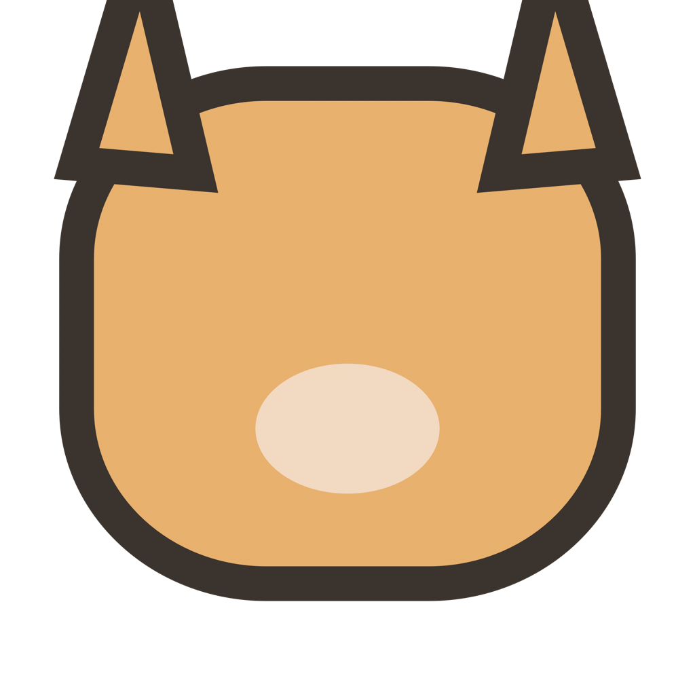

Charge Cat 개인정보 처리방침
시행일: 2026년 7월 16일
수집하는 정보
Charge Cat은 사용자 계정, 광고 식별자, 분석 정보, 결제 정보 또는 개인 프로필을 수집하지 않습니다.
기기 안에서 사용하는 정보
배터리 잔량과 충전 상태는 애니메이션을 표시하기 위해 Mac에서만 읽으며 외부로 전송하지 않습니다. 언어, 화면 위치, 충전 목표 및 애니메이션 선택은 앱의 샌드박스 컨테이너에만 저장됩니다.
네트워크와 외부 링크
현재 배포 버전은 원격 애니메이션 카탈로그를 연결하지 않습니다. 지원 또는 개인정보 처리방침 링크를 선택하면 기본 웹 브라우저가 GitHub 또는 이 사이트를 엽니다. 해당 사이트의 데이터 처리는 각 서비스의 정책을 따릅니다.
보관과 삭제
Charge Cat 서버에 보관되는 사용자 데이터는 없습니다. 로컬 설정은 macOS의 Charge Cat 앱 컨테이너를 삭제하면 함께 제거할 수 있습니다.
문의
개인정보 관련 문의는 Charge Cat 지원 페이지에 남겨 주세요.
Charge Cat Privacy Policy
Effective: July 16, 2026
Information we collect
Charge Cat does not collect user accounts, advertising identifiers, analytics, payment information, or personal profiles.
Information used on your device
Battery level and charging state are read only on your Mac to display animations and are not transmitted. Language, screen position, charge target, and animation choices stay in the app's sandbox container.
Network access and external links
The current release does not connect to a remote animation catalog. Choosing a support or privacy link opens GitHub or this site in your default browser, where the respective service policy applies.
Retention and deletion
No user data is retained on a Charge Cat server. You can remove local settings by deleting Charge Cat's macOS app container.
Contact
For privacy questions, use the Charge Cat support page.